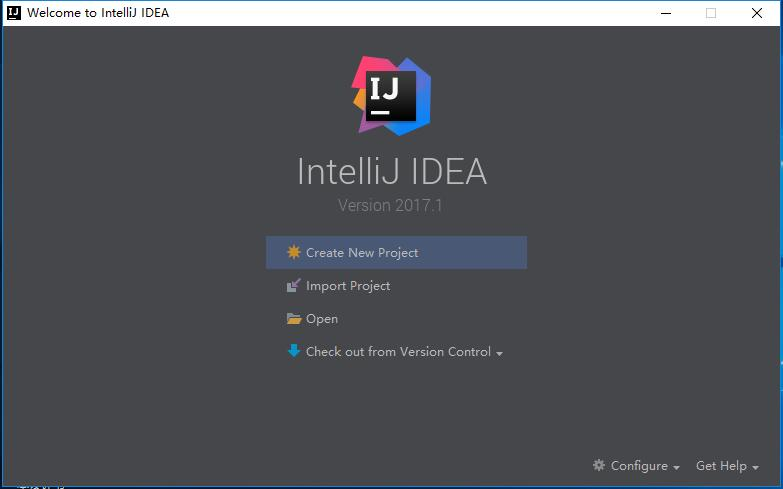
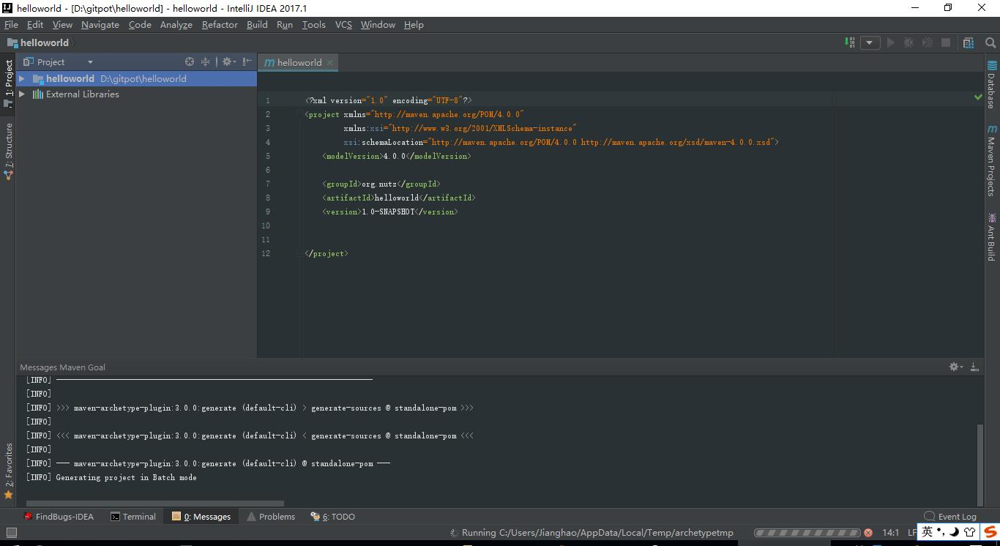
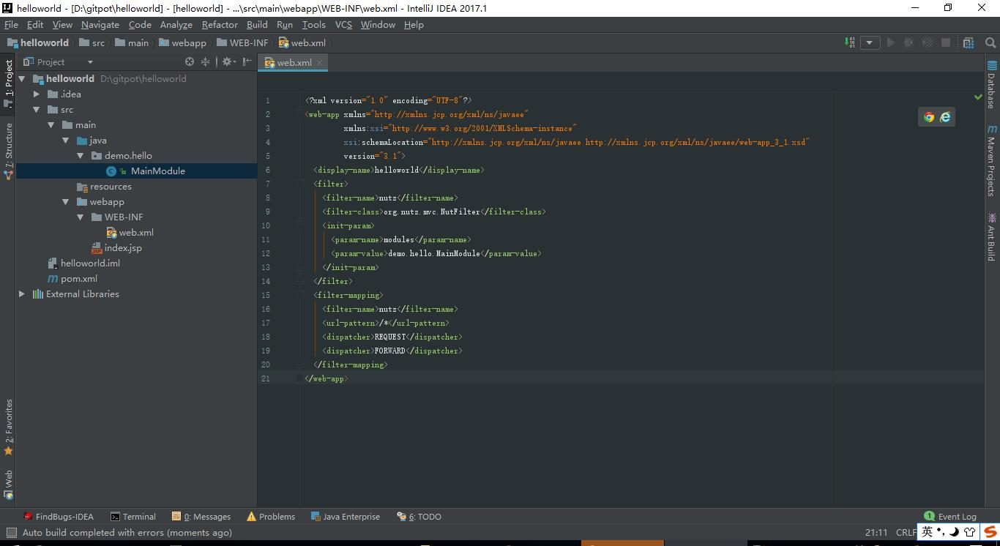
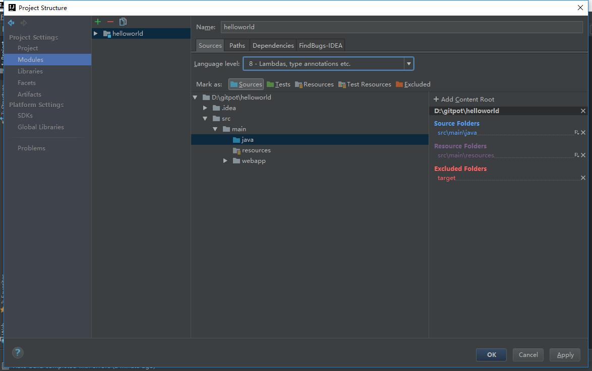
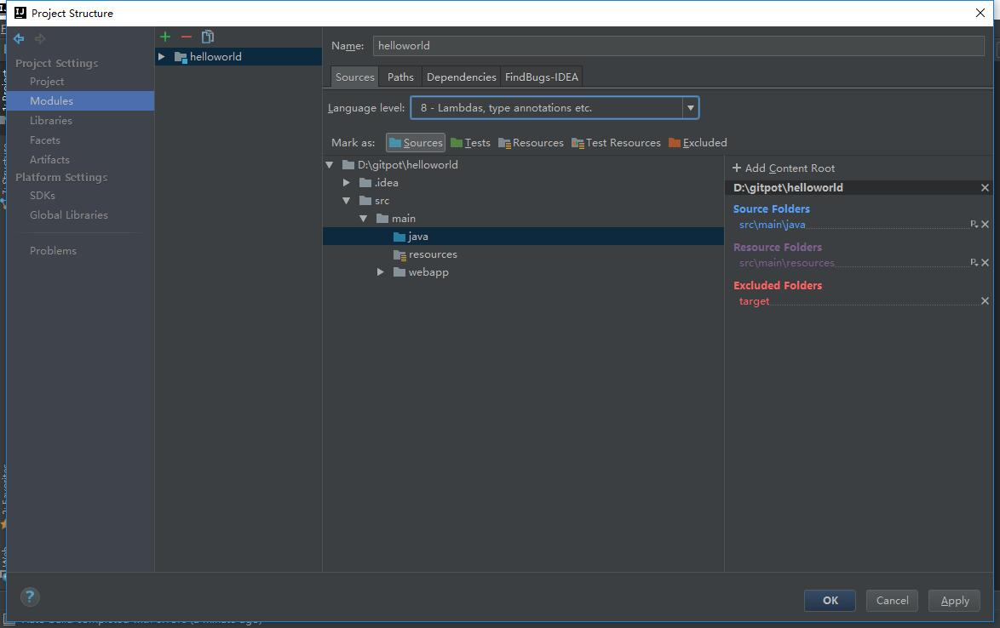
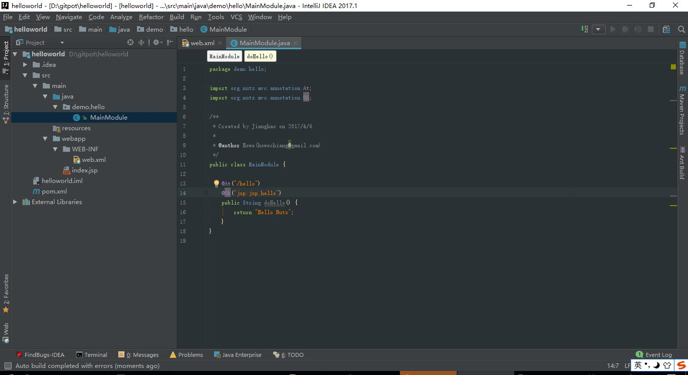

-
2详细步骤
-
2.2点完成后等待项目初始化
-
2.4配置运行服务器
-
2.5修改 web.xml
-
2.6创建入口函数
-
2.7创建 jsp 页面
-
2.9在浏览器中访问
-
3如何进阶
关于这个 Hello World
这是一个简单的小例子，通过简单的几步，即可在 IDEA 中搭建出一个 Nutz.Mvc的运行环境，我假设你已经：
- 有了 IntelliJ IDEA -- 2016.x 以上版本,推荐2017.x系列
详细步骤
创建一个 Maven Project
创建一个新的 Maven Project （Create New Project > Maven > maven-archetype-webapp > Bundled(Maven 3)）
- 项目的groupId为 org.nutz
- 项目的artifactId为helloworld



点完成后等待项目初始化

将 Nutz.jar 引入项目中
本例子需要 Nutz-1.r.59 或者更高的版本
在 pom.xml 写入，并保存。
<dependency> <groupId>org.nutz</groupId> <artifactId>nutz</artifactId> <version>1.r.60</version> </dependency>

配置运行服务器
在 pom.xml 写入 servlet 依赖，并保存。
<dependency> <groupId>javax.servlet</groupId> <artifactId>javax.servlet-api</artifactId> <version>3.1.0</version> <scope>provided</scope> </dependency>
在 pom.xml 配置运行服务器依赖，这里使用的是Jetty
<plugins> <plugin> <groupId>org.eclipse.jetty</groupId> <artifactId>jetty-maven-plugin</artifactId> <version>9.4.3.v20170317</version> </plugin>
保存文件即可
 修改 web.xml
修改 web.xml
通过声明一个 Filter，将 Nutz.mvc 挂载到 项目 中
<?xml version="1.0" encoding="UTF-8"?> <web-app xmlns="http://xmlns.jcp.org/xml/ns/javaee" xmlns:xsi="http://www.w3.org/2001/XMLSchema-instance" xsi:schemaLocation="http://xmlns.jcp.org/xml/ns/javaee http://xmlns.jcp.org/xml/ns/javaee/web-app_3_1.xsd" version="3.1"> <display-name>hellonutz</display-name> <filter> <filter-name>nutz</filter-name> <filter-class>org.nutz.mvc.NutFilter</filter-class> <init-param> <param-name>modules</param-name> <param-value>demo.hello.MainModule</param-value> </init-param> </filter> <filter-mapping> <filter-name>nutz</filter-name> <url-pattern>/*</url-pattern> <dispatcher>REQUEST</dispatcher> <dispatcher>FORWARD</dispatcher> </filter-mapping> </web-app>

创建入口函数
新建个java文件夹，并设定为源码文件夹
 打开刚才创建的 MainModule.java，添加一个函数，整个类的源代码如下：
打开刚才创建的 MainModule.java，添加一个函数，整个类的源代码如下：
package demo.hello;
import org.nutz.mvc.annotation.*;
public class MainModule {
@At("/hello")
@Ok("jsp:jsp.hello")
public String doHello() {
return "Hello Nutz";
}
}
如果你想知道更多配置方式，请参看
创建 jsp 页面
因为我们在入口函数里声明了一个 JSP 视图，按照视图的定义
- @Ok("jsp:jsp.hello")
我们需要在 WEB-INF 下面建立一个名为 jsp 的文件夹，并在里面建立一个 hello.jsp

下面是 hello.jsp 的源代码：
<html>
<body>
<h2>Hello World!</h2>
<h1><%=request.getAttribute("obj")%></h1>
</body>
</html>
仅仅是输出入口函数的返回值。是的，无论入口函数返回什么，都会保存在 request 对象 "obj" 属性中
启动服务 点击右侧Maven Projects > Plugins > jetty > jetty:run
控制台输出

在浏览器中访问

这篇文章虽然不算短，但是实际上，你需要做的事情不多，不是吗？ ^_^